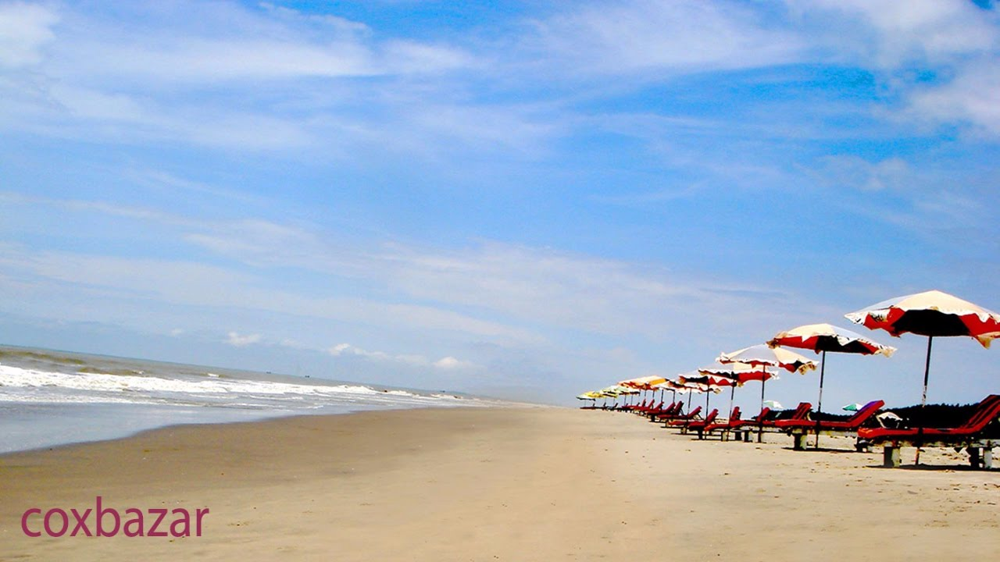
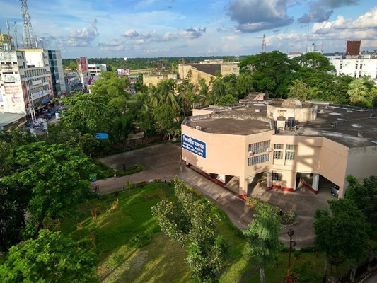

Cox's bazar

About Cox's bazar
Cox's Bazar (Bengali: কক্সবাজার, pronounced [kɔksbadʒaɾ]) is a city, fishing port, tourism centre and district headquarters in southeastern Bangladesh. The beach in Cox's Bazar is sandy and has a gentle slope and with an unbroken length of 155 km (96 mi) it is often termed the "longest natural unbroken sea beach" in the world.[2][3][4] It is located 150 km (93 mi) south of the divisional headquarter of Chittagong. Cox's Bazar is also known by the name Panowa, which translates literally as "yellow flower". Another old name was "Palongkee".
The modern Cox's Bazar derives its name from Captain Hiram Cox, an officer of the British East India Company. Cox was appointed Superintendent of Palongkee outpost after Warren Hastings became Governor of Bengal. He embarked upon the task of rehabilitation and settlement of the Arakanese refugees in the area.[5] Captain Cox died in 1799 before he could finish his work. To commemorate his role in rehabilitation work, a market was established and named Cox's Bazar after him. Unlike many locations in the Indian Subcontinent where place names dating from the colonial period have been changed, Cox's name is still retained in the city he founded.
Today, Cox's Bazar is one of the most visited tourist destinations in Bangladesh, although not a major international tourist destination. In 2013, the Bangladesh Government formed the Tourist Police unit to protect local and foreign tourists better, as well as to look after the nature and wildlife in the tourist spots of Cox's Bazar.[6]
Beach

History of Cox's bazar
History
Cox's Bazar Town was constituted in 1869, eventually becoming a B-grade municipality in 1989. Located along the Bay of Bengal in South Eastern Bangladesh, Cox's Bazar Town is a health resort. But it is famous mostly for its long natural sandy beach. The municipality covers an area of 6.85 km2 (2.64 sq mi) with 27 mahallas and 9 wards and has a population of 51,918.[7] Cox's Bazar is connected by road and air with Chittagong.[8][9]
The greater Chittagong area, including Cox's Bazar, was under the rule of Arakan kings from the early 9th century until its conquest by the Mughals in 1666 AD.[10] When the Mughal Prince Shah Shuja was passing through the hilly terrain of the present-day Cox's Bazar on his way to Arakan, he was attracted to its scenic and captivating beauty. He commanded his forces to camp there. His retinue of one thousand palanquins stopped there for some time. A place named Dulahazara, meaning "one thousand palanquins," still exists in the area. After the Mughals, the place came under the control of the Tipras and the Arakanese, followed by the Portuguese and then the British.
The name Cox's Bazar originated from the name of a British East India Company officer, Captain Hiram Cox, who was appointed as the Superintendent of Palonki (today's Cox's Bazar) outpost. He succeeded Warren Hastings, who became the Governor of Bengal following the British East India Company Act in 1773. The Captain rehabilitated many refugees in the area, but died in 1799 before he could finish his work. To commemorate him, a market was established and named after him, called Cox's Bazar. Cox's Bazar then was first established in 1854 and became a municipality in 1869.[10]
After the Sepoy Mutiny (Indian Rebellion of 1857) in 1857, the British East India Company was highly criticised and questioned on humanitarian grounds, specially for its opium trade monopoly over the Indian Sub-Continent. However, after its dissolution on 1 January 1874, all of the company's assets including its Armed Forces were acquired by the British Crown. After this historic takeover, Cox's Bazar was declared a district of the Bengal Province under the British Crown.
Cox's Bazar Map from Series U542, US Army Map Service, 1955
After the end of British rule in 1947, Cox's Bazar became part of East Pakistan. Captain Advocate Fazlul Karim, the first chairman (after independence from the British) of Cox's Bazar Municipality, established the Tamarisk Forest along the beach. He wanted to attract tourists as well as to protect the beach from tsunami. He donated much of his father-in-law's and his own lands as sites for constructing a public library and a town hall. He was inspired to build Cox's Bazar as a tourist spot after seeing beaches of Bombay and Karachi, and was a resort pioneer in developing Cox's Bazar as a destination. He established a maternity hospital, the stadium and the drainage system by procuring grants from the Ford Foundation and Rockefeller Foundation through correspondence. T. H. Matthews, the principal of the Dacca Engineering College (1949~1954), was a friend who had helped him in these fundraising efforts. Engineer Chandi Charan Das was the government civil engineer who worked on all these projects. In 1959 the municipality was turned into a town committee.